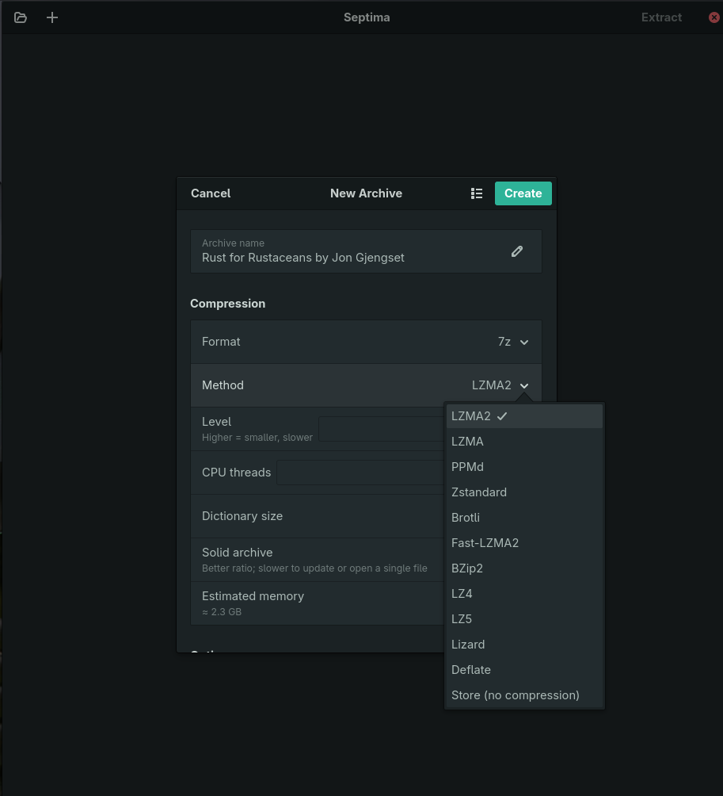

The archiver that actually speaks modern-codec 7z.
A GNOME-native front-end for 7-Zip ZS — browse, extract, and create archives with Zstandard, Brotli and Fast-LZMA2, and a real compression-tuning interface no other Linux archiver offers.

Modern codecs, real tuning, and a native GNOME UI — a combination nothing else fills.
| Modern codecs | Real tuning | GNOME-native | One-gesture .tar.zst |
|
|---|---|---|---|---|
| File Roller / Ark | ✗ | ✗ | ✓ | ✗ |
| PeaZip | ~ | ✓ | ✗ | ~ |
7-Zip CLI (7zz) | ✓ | ✓ | ✗ | ✗ |
| Septima | ✓ | ✓ | ✓ | ✓ |
Everything driven by the bundled 7zz — no host filesystem access, portals only.
Format × codec × level, with the level range reacting to the codec. Dictionary, solid mode, and threads — with a live memory estimate.
Zstandard (1–22), Brotli, Fast-LZMA2, LZ4/LZ5, Lizard, plus LZMA2, PPMd, BZip2 — inside real .7z.
One switch for the BCJ filter, instead of the -m0=bcj folklore the Windows tool makes you learn.
Create a real .tar.zst / .tar.xz in one gesture, with full compression control.
Live progress and cancel, encrypted-archive password prompts, and split-volume output.
A Flatpak that ships 7zz and touches your files only through XDG portals — never the whole home directory.
The dialog covers the common knobs; the Advanced field passes any 7-Zip switch straight through.
-mfb=273 word size · -mmf=bt4 match finder · -mo=32 PPMd order.
-m0=ARM64 -m1=lzma2 for ARM binaries · -m0=Delta:4 for fixed-stride data.
-snl keep symlinks · -ms=100m solid block size · -mem=… modern encryption.
Honest about what's next.
.tar.zst and see the files inside, not just the outer tar..flatpakref so flatpak update pulls new releases.